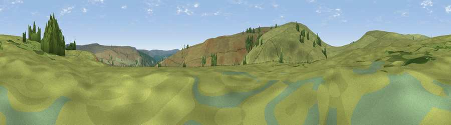

Viewpoint c12020_7275
#38883 in England · top 80% of its area beats it · — · access?Where it is
The exact computed spot (NT 63775 01025). Click the marker for map links.
Public access: no public right of way or access land is recorded at this exact spot — it may be on private land. Computed from Natural England's CRoW access layer and OpenStreetMap rights of way — not the legal definitive map. Always verify locally.
The view, rendered

A 360° render of this exact spot computed from the terrain model, tree cover and land cover — summer colours, afternoon light, calibrated against photographs of famous viewpoints. Real trees, hedges and buildings will differ in detail.
The panorama
Grey silhouette: terrain skyline in each direction (720 bearings, Earth curvature and refraction included). Dashed green: skyline with trees (+15 m) and buildings (+8 m) as obstacles. Blue strip: how far the ground is visible on each bearing.
Where the view opens
Wedge length = distance to the farthest visible ground on that bearing (vegetation-aware). Rings at 10, 25 and 50 km.
What fills the view
93% grassland · 7% woodland
Angular shares of the visible panorama (visual magnitude), not map area. Landscape diversity 0.11 (0–1 Shannon).
Key numbers
More beautiful places nearby
The staircase of upgrades: each row has a higher view potential than everything closer. Driving times are estimates from straight-line distance, calibrated against real road routing — check an actual route before setting out.
| Place | Direction | Drive | Score |
|---|---|---|---|
| Viewpoint c12025_7283 | ENE · 0 km | ~2 min | 38.6 |
| Viewpoint c12000_7287 | SSE · 1 km | ~3 min | 55.6 |
| Viewpoint c11995_7247 | SW · 2 km | ~5 min | 82.1 |
| Viewpoint c12273_7856 | ENE · 32 km | ~49 min | 83.7 |
| Viewpoint c12396_7887 | ENE · 36 km | ~55 min | 85.7 |
| Viewpoint near Kirknewton | NE · 41 km | ~60 min | 86.1 |
| Viewpoint near Chillingham | ENE · 50 km | ~72 min | 88.1 |
| Ullock Pike | SSW · 82 km | ~106 min | 89.4 |
55.30198, -2.57212 · source: screening · position refined by local search. Computed location — check access rights before visiting.